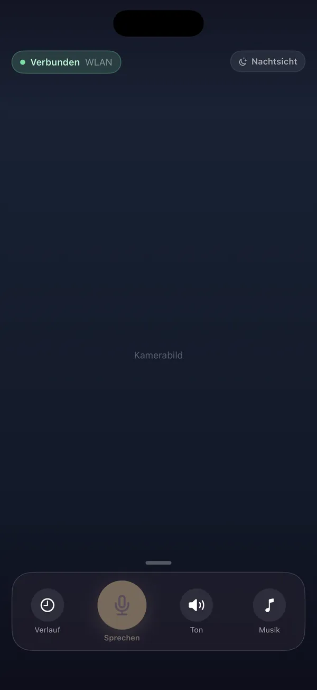

App de babá eletrônica grátis. Só você vê.
O LaLeLu transforma seu iPhone, iPad e Mac em uma babá eletrônica privada com câmera. Grátis, sem assinatura e sem conta. Criptografado de ponta a ponta.
Para iPhone, iPad e Mac. São necessários dois aparelhos Apple.

- Grátis – 0 €
- Sem assinatura
- Sem conta
- Sem anúncios
- Sem rastreamento
Babá eletrônica com câmera.
Todos os recursos grátis.
Um aparelho fica no quarto como unidade do bebê e o outro vira a unidade dos pais. Combine iPhone, iPad e Mac como quiser.
- Vídeo e som ao vivoNo Wi-Fi e fora de casa, com dados móveis.
- Visão noturnaA tela da unidade do bebê vira uma luminária.
- Alerta de choro no aparelhoComo notificação push, mesmo com a tela bloqueada.
- Falar com o bebêToque para falar, sem sair da cama.
- Sons para dormir com timerRuídos, chuva e oceano.
- Histórico de atividadeFica só no seu aparelho.
Luz apagada.
Visão noturna ligada.
A unidade do bebê fica no quarto escuro. No modo noturno, a tela fica quase preta enquanto a transmissão continua.
Com a visão noturna, a tela vira uma luminária suave, vermelha ou branca. A luz vermelha costuma atrapalhar menos o sono.
Você também pode ligar e desligar a visão noturna pelo seu iPhone, sem entrar no quarto.


Seu bebê chora.
Seu iPhone sabe.
A detecção de choro acontece inteiramente na unidade do bebê, com o Apple SoundAnalysis. Quando ela ouve choro ou tosse, você recebe uma notificação push, mesmo com a tela bloqueada. Nenhum áudio vai para a nuvem por causa disso.

Uma palavra calma.
Sem sair da cama.
Segure “Falar” e sua voz chega ao quarto. Solte, e o silêncio volta.

Experimente: segure “Falar”.
Ruído ligado.
Timer rodando.
Ruído branco, rosa e marrom, além de chuva e oceano. Você inicia os sons pelo seu iPhone.
O timer roda na própria unidade do bebê e diminui o som aos poucos, mesmo que o seu iPhone perca a conexão no meio do caminho.
Escolha 15, 30, 45 ou 60 minutos, ou sem fim.
Seu Mac antigo
ganhou um novo trabalho.
Coloque-o no quarto: com a câmera integrada ou uma conectada, ele vira a unidade do bebê. Seu iPhone é a unidade dos pais.


1 a 2 segundosÉ o tempo que costuma levar para conectar em casa. Fora, com dados móveis, muitas vezes alguns segundos.
Combine livrementeiPhone, iPad ou Mac no quarto, iPhone ou iPad com você. Um iPhone antigo basta como unidade do bebê.
Para os dois paisVárias unidades dos pais podem ficar conectadas ao mesmo tempo, até com ID Apple diferentes.
Babá eletrônica privada:
ninguém mais assiste.
- Criptografado de ponta a ponta.
- Vídeo e som viajam direto entre os seus aparelhos (WebRTC, DTLS-SRTP). Só os aparelhos que você mesmo pareou veem a imagem.
- Nunca gravado.
- Vídeo e som não ficam guardados em nenhum servidor nem de forma permanente no app.
- Detecção no aparelho.
- A análise de som acontece localmente com o Apple SoundAnalysis. Nenhum áudio é enviado para nós.
- Sem conta, sem anúncios, sem rastreamento.
- Para parear basta o acesso ao iCloud que você já tem.
Para ser transparente: o LaLeLu usa a Apple (iCloud, notificações push) e a Cloudflare para estabelecer a conexão e enviar o alerta. O que é armazenado, e por quanto tempo, está descrito por completo na política de privacidade (em inglês).
Babá eletrônica sem assinatura e sem conta
Muitos apps de babá eletrônica pedem assinatura, uma compra por aparelho ou uma conta própria. O LaLeLu não.
| Critério | LaLeLu | Apps de babá eletrônica comuns |
|---|---|---|
| Preço | Grátis, para todos os aparelhos | muitas vezes assinatura ou compra por plataforma |
| Conta / cadastro | Nenhuma, só o seu acesso ao iCloud para parear | muitas vezes é exigida uma conta própria |
| Anúncios e rastreamento | Sem anúncios, sem SDK de rastreamento | às vezes anúncios ou análises de uso |
| Vídeo e som | Criptografados de ponta a ponta, nunca gravados | às vezes guardados ou processados em servidores na nuvem |
| Detecção de choro | No aparelho, nenhum áudio vai para a nuvem | às vezes só um limite de volume ou análise na nuvem |
| Aparelhos | iPhone, iPad e Mac, combináveis livremente | muitas vezes uma única plataforma |
A comparação descreve diferenças gerais do mercado, não um app específico.
Pronto em poucos minutos
- Baixe.Instale o LaLeLu nos dois aparelhos pela App Store.
- Escolha.Escolha “Unidade do bebê” no aparelho do quarto e “Unidade dos pais” no outro.
- Pareie.Pareie com um link ou QR code. Pronto.
Babá eletrônica: perguntas frequentes
Este app de babá eletrônica é mesmo grátis, sem assinatura?
Sim. O LaLeLu é um app de babá eletrônica grátis, sem assinatura, sem anúncios e sem recursos bloqueados. Não existe período de teste que acaba.
Preciso de uma conta para usar o LaLeLu?
Não. O LaLeLu não tem conta própria nem cadastro. Para parear seus dois aparelhos uma vez, o app usa o acesso ao iCloud que você já tem no iPhone, iPad ou Mac.
O vídeo ou o áudio são gravados ou armazenados?
Não. Vídeo e som são enviados ao vivo, com criptografia de ponta a ponta (WebRTC, DTLS-SRTP), direto entre os seus aparelhos e não são gravados em nenhum servidor nem no app. Se uma conexão direta não for possível, o fluxo, ainda criptografado, passa por um relay da Cloudflare que não consegue descriptografá-lo.
Quais aparelhos preciso para uma babá eletrônica com câmera?
Dois aparelhos Apple: um fica no quarto como unidade do bebê (iPhone, iPad ou Mac com câmera e microfone), o outro é a unidade dos pais (iPhone ou iPad). Um iPhone antigo já basta como unidade do bebê. Android não é compatível.
Posso usar meu Mac como babá eletrônica?
Sim. O app para Mac funciona como unidade do bebê, usando a câmera integrada ou uma câmera conectada e o microfone. Ele fica no quarto do bebê enquanto o seu iPhone é a unidade dos pais.
Funciona fora de casa, com dados móveis?
Sim. Conecta no mesmo Wi-Fi e também por dados móveis ou outras redes. Os dois aparelhos precisam de internet. Em casa a conexão costuma levar de um a dois segundos, fora de casa muitas vezes alguns segundos.
Como funciona a detecção de choro?
A detecção de sons roda inteiramente na unidade do bebê, com o Apple SoundAnalysis. Nenhum áudio vai para a nuvem para análise e nada é coletado para treinamento. Quando o app ouve choro ou tosse, você recebe uma notificação.
Recebo o aviso com o iPhone bloqueado?
Sim. O aviso chega como notificação push mesmo com a tela bloqueada. Permita as notificações do LaLeLu nos ajustes do iPhone.
Como pareio a unidade do bebê com a unidade dos pais?
No aparelho do bebê você cria um link de pareamento ou QR code e o abre ou escaneia no aparelho dos pais. Leva poucos minutos. O link é a chave do pareamento, então compartilhe só com pessoas de confiança.
Posso conectar várias unidades dos pais ao mesmo tempo?
Sim. Várias unidades dos pais podem ficar conectadas ao mesmo tempo, para que os dois responsáveis fiquem informados, mesmo com Apple IDs diferentes.
Ajuda e suporte
Dúvidas, feedback ou precisa de ajuda? Escreva direto para o desenvolvedor, quem responde é uma pessoa: moritz.wolf@a1.net. No app você também encontra “Relatar um problema / Feedback”.
Sua babá eletrônica já está no seu bolso.
Baixe o LaLeLu grátis e configure sua babá eletrônica privada em poucos minutos.
Baixar grátis na App Store